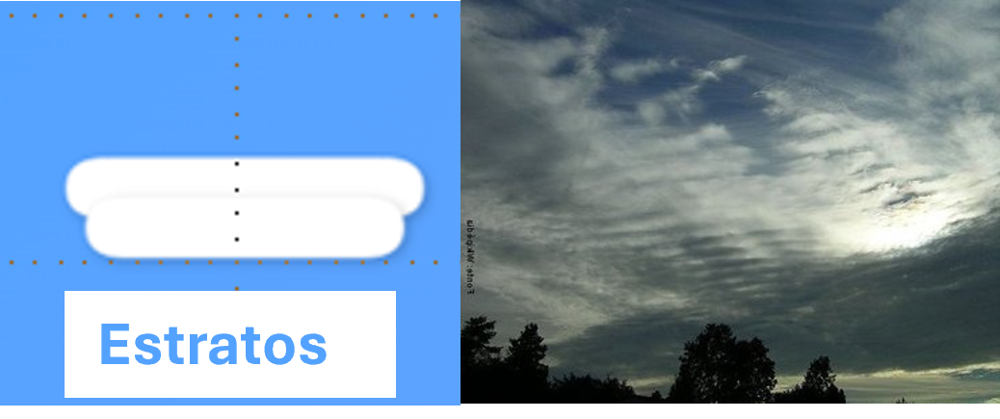
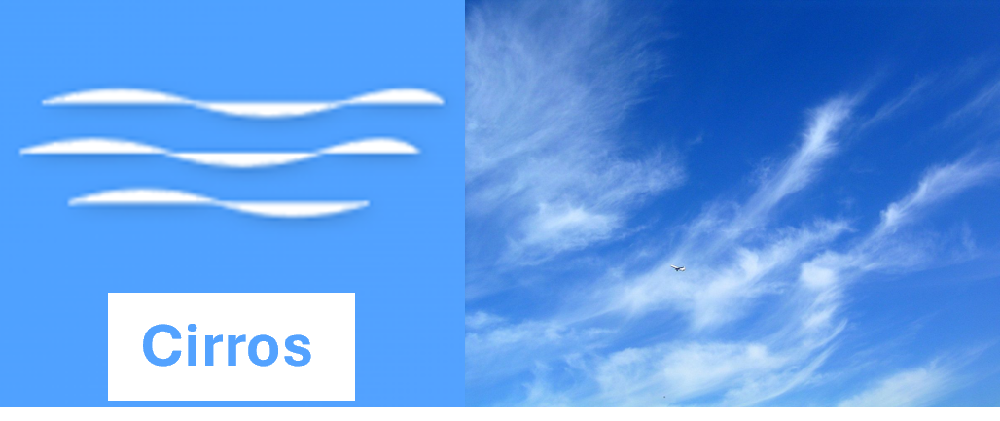

Nuvens com aparência fofa e amontoada, com base plana e topo arredondado.
São comuns em dias ensolarados.

Nuvens em camadas uniformes, acinzentadas, que cobrem todo o céu como um cobertor.
Podem produzir chuvisco.

Nuvens altas, finas e delicadas, com aparência de fios de cabelo.
São formadas por cristais de gelo.
Nuvens gigantes de tempestade, com grande desenvolvimento vertical.
Produzem raios, trovões e chuva forte.